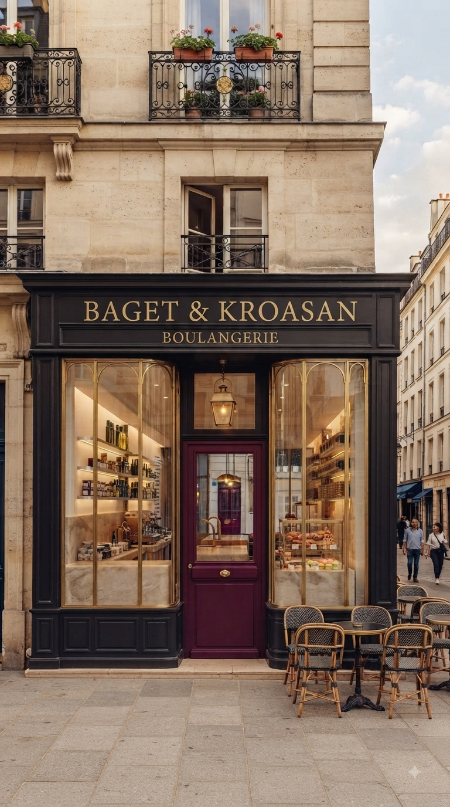
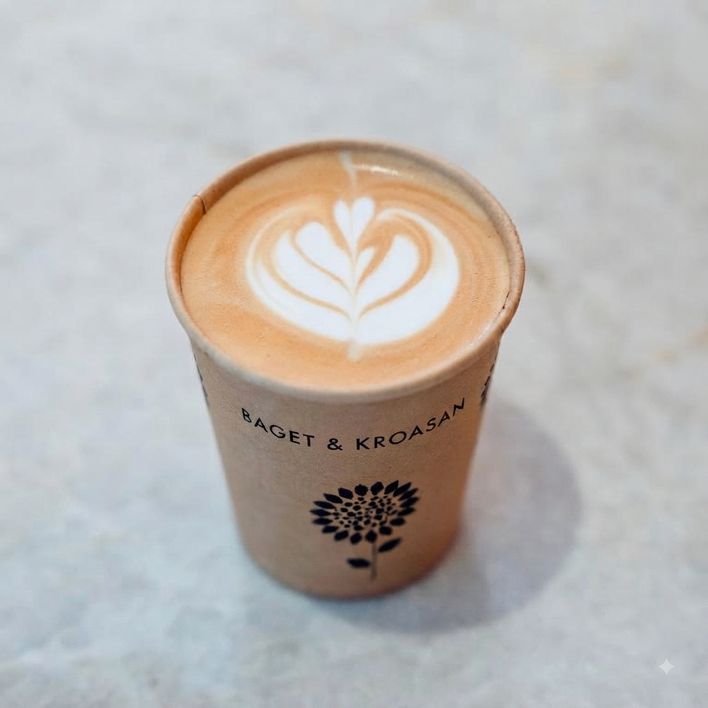
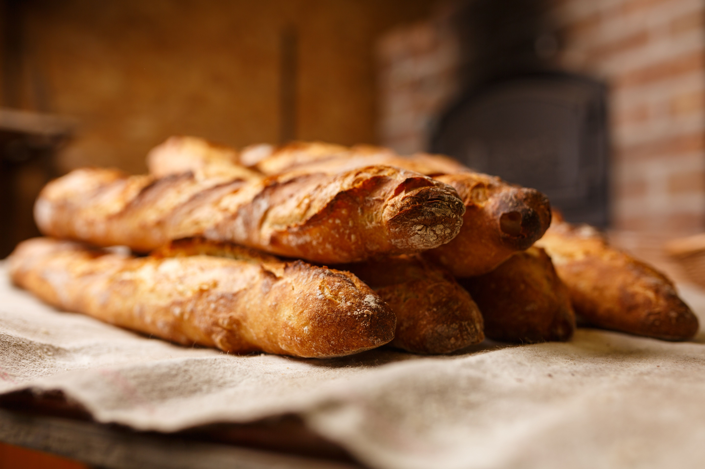
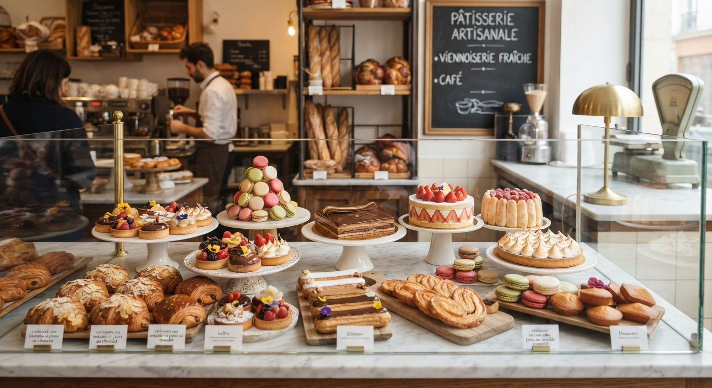
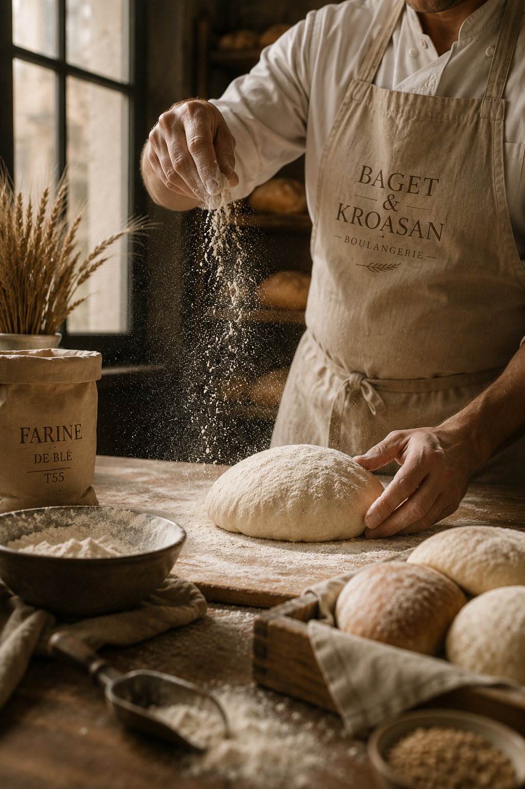
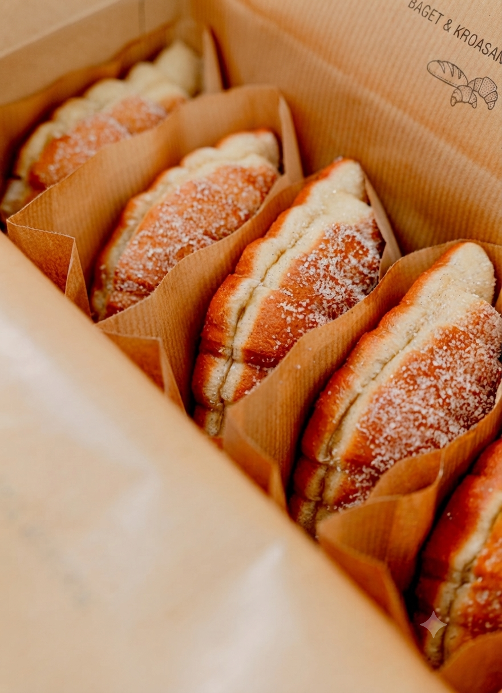

IZ NAŠE PEKARE
Svakodnevni trenuci
Miris sveže pečenog hleba, zlatni slojevi kroasana i mali trenuci koji čine našu svakodnevicu.




BAGET & KROASAN
Tradicija francuskog pekarstva, ispričana na naš način.
NAŠA PRIČA
U Baget & Kroasan verujemo da se kvalitet krije u jednostavnosti. Naša priča počinje ljubavlju prema francuskom pekarstvu i željom da njegovu toplinu, mirise i autentične ukuse približimo svakodnevnom životu.
Biramo pažljivo odabrane sastojke, negujemo tradicionalne recepture i svakom proizvodu posvećujemo vreme koje zaslužuje. Od prvog mešenja testa do poslednjeg sloja hrskave korice, svaki korak radimo sa istom pažnjom.
Za nas pekara nije samo mesto na kojem se kupuje hleb. To je mesto susreta, jutarnje kafe, toplog kroasana i malih trenutaka koji običan dan čine lepšim.


NAŠ ZANAT
Iza svakog mirisnog kroasana, hrskavog bageta i mekanog hleba stoji vreme, strpljenje i pažnja prema detaljima.
Naše testo ne žurimo. Dajemo mu vreme da odmori, naraste i razvije ukus koji se prepoznaje već pri prvom zalogaju.
Verujemo u zanatski pristup i u ono što se ne može dobiti prečicama — svežinu, teksturu i ukus koji nastaju tek kada se svakom koraku posvetimo kako treba.
Najlepše stvari često su i najjednostavnije.
Sveže pečeno. Sa pažnjom napravljeno.
TAKE AWAY
Žurite na posao, čekate prijatelje ili jednostavno želite da jutro započnete nečim posebnim?
Izaberite svoje omiljeno pecivo, hleb ili poslasticu i ponesite ih sa sobom. Sve što pripremamo dostupno je i za poneti — pažljivo upakovano i spremno da u njemu uživate gde god da ste.
OTKRIJTE NAŠU PONUDUIZ NAŠE PEKARE
Miris sveže pečenog hleba, zlatni slojevi kroasana i mali trenuci koji čine našu svakodnevicu.



BAGET & KROASAN